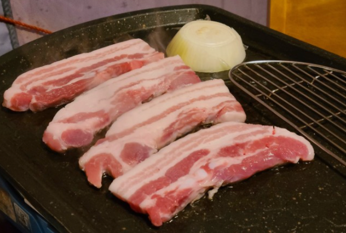

무심천
개화기의 무심천
충청북도 청주시를 흐르는 하천으로 길이 34.50㎞, 유역면적 197.32㎢이다. 청주시 상당구 낭성면 남부 산지에서 발원하여 남서쪽으로 흐르다가 가덕면 서부에서 북서쪽으로 방향을 바꾸어, 청주 시가지로 흘러든다. 물길은 동쪽의 낙가산 연맥과 서쪽의 구릉지 사이에 안긴 시가지 중심부를 지나 미호천에 합류한다.
충청북도 청주시를 흐르는 하천으로 길이 34.50㎞, 유역면적 197.32㎢이다. 청주시 상당구 낭성면 남부 산지에서 발원하여 남서쪽으로 흐르다가 가덕면 서부에서 북서쪽으로 방향을 바꾸어, 청주 시가지로 흘러든다. 물길은 동쪽의 낙가산 연맥과 서쪽의 구릉지 사이에 안긴 시가지 중심부를 지나 미호천에 합류한다.
충청북도 청주시의 국보. 청주 용두사지 철당간이라는 명칭으로 국보 제41호로 지정되어 있으며, 국보 제106호 계유명전씨아미타불비상, 국보 제297호 안심사 영산회 괘불탱와 함께 청주시의 3개 뿐인 국보이다. 또한 용두사지 철당간은 다른 두 국보와는 달리 유일하게 건조물 형태이다.


청주 우암산에 있는 동네로, 수암골목 1번지에 있어 수암골로 불립니다. 한국전쟁 당시 피란민들이 살면서 생겨난 곳으로 좁은 집들이 다닥다닥 붙어 있는 곳인데, 2007년 공공미술 프로젝트 사업을 통해 골목에 그림이 생겨났습니다. 드라마 카인과 아벨의 촬영지로 알려지면서 아기자기한 골목을 카메라에 담으려는 방문객이 많이 찾아오고 있습니다.
특산품
맛집 리스트